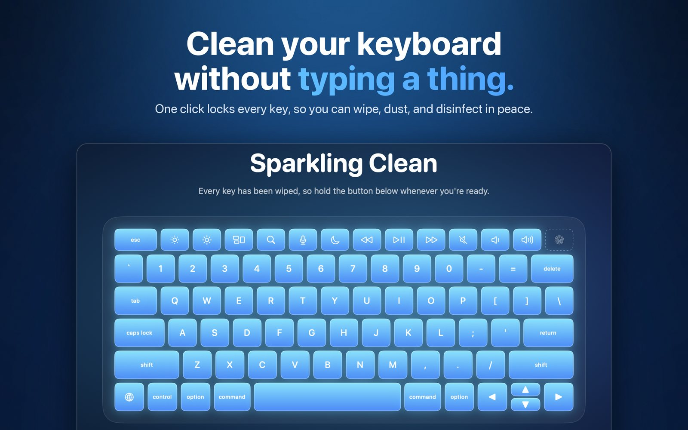
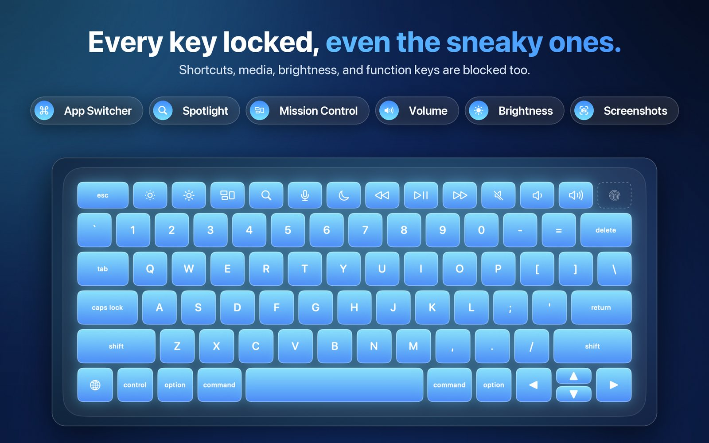
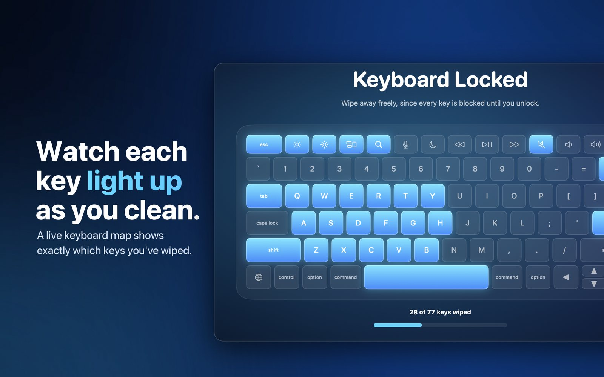
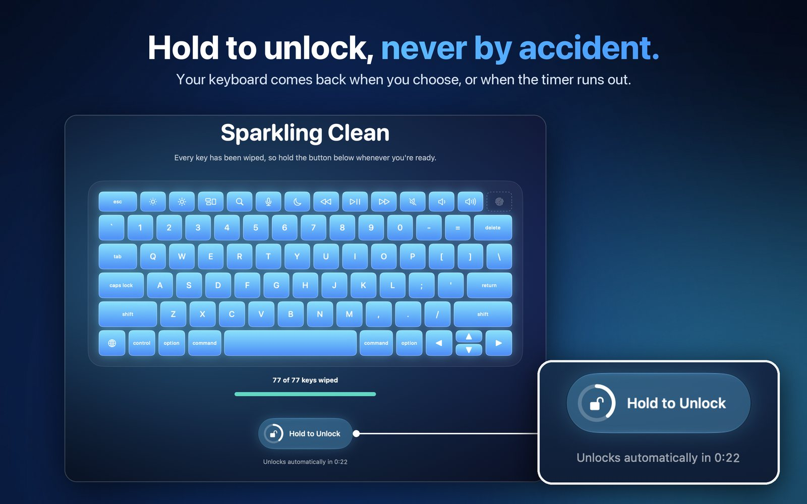
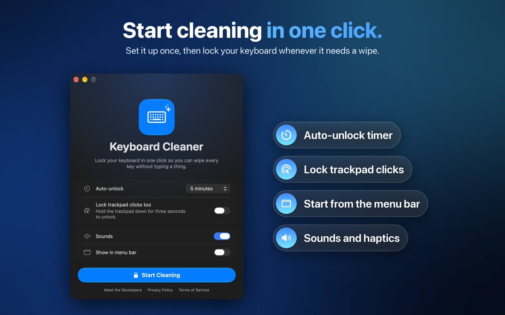
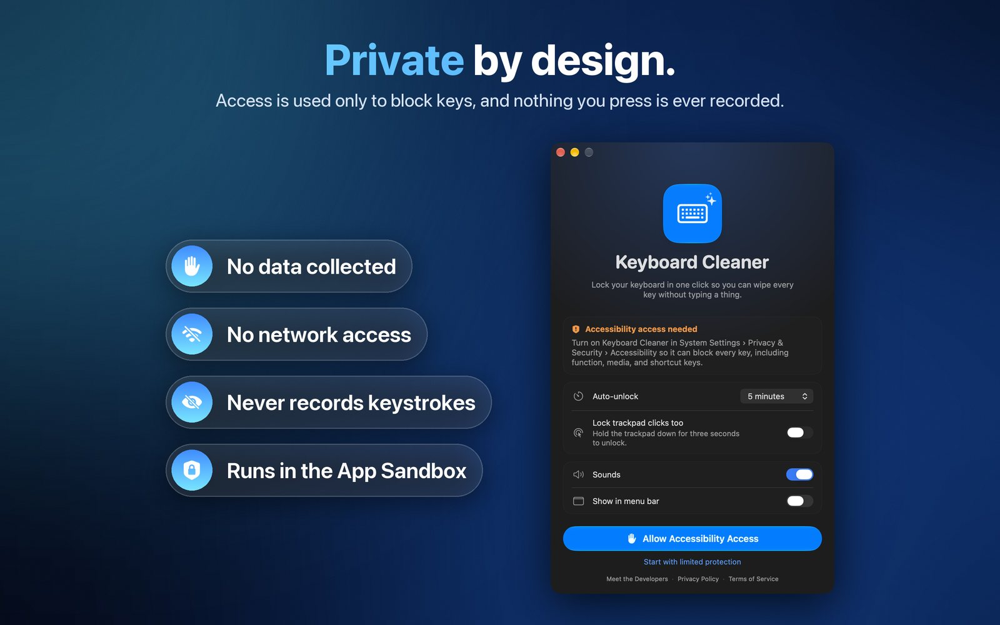

Clean your Mac keyboard
without typing a thing.
Lock your Mac keyboard in one click so you can wipe every key without typing a thing.






Everything you need to clean in peace
Every key, locked
Letters, shortcuts like ⌘-Tab and Spotlight, the function row, and media keys all stay quiet.
A live keyboard map
Each key lights up as you wipe it, so you know exactly when you're done.
Hold to unlock
A two-second hold ends the session, so a stray swipe never does.
Never locked out
An auto-unlock timer always gives your keyboard back.
Trackpad lock
Optionally lock clicks too, then wipe the trackpad as well.
Private by design
No data collected, no network access, and nothing you press is ever recorded.
How to clean your Mac keyboard safely
- Unplug any cables, and shut down your Mac before using any liquid or disinfecting wipe.
- For a quick dusting, open Keyboard Cleaner and click Start Cleaning so nothing you press does anything.
- Hold your Mac at an angle and brush or blow out crumbs between the keys.
- Wipe each key with a soft, lint-free cloth that's slightly damp, and watch the keyboard map light up.
- Press and hold Hold to Unlock when every key is clean, and your keyboard is back instantly.
Apple's own guidance for cleaning Apple products covers which wipes and cleaners are safe for each device.
Questions
How do I lock my Mac keyboard to clean it?
Open Keyboard Cleaner, allow Accessibility access once, and click Start Cleaning; every key is blocked until you press and hold Hold to Unlock or the auto-unlock timer ends.
Does it block the function, volume, and brightness keys?
Yes, with Accessibility access it blocks the whole keyboard, including media, brightness, keyboard backlight, and system shortcuts like Command-Tab, Spotlight, and Mission Control.
Why does Keyboard Cleaner need Accessibility access?
It's the only way macOS lets an app block every key system-wide, and the app uses it solely while a session is running without ever recording what you press.
Can it block Touch ID or the power button?
No app can, because your Mac's hardware handles them directly, so just avoid pressing them while you clean.
What if I can't unlock?
The auto-unlock timer always releases the keyboard, and quitting the app from Force Quit releases it too.
Is Keyboard Cleaner free?
Yes, Keyboard Cleaner is free on the Mac App Store, with no ads, subscriptions, or tracking.
Support
Email berinshteyn@gmail.com with any question or idea, and we'll get back to you within a few days.